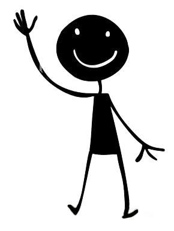
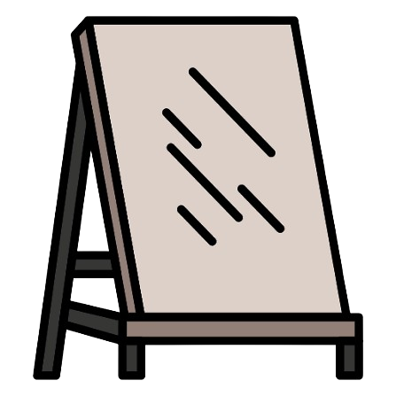
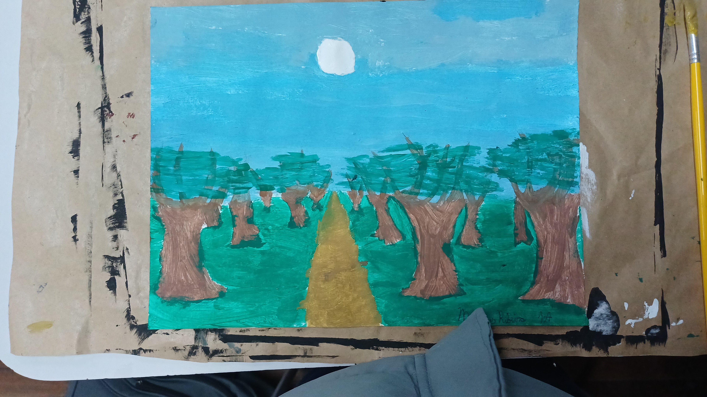
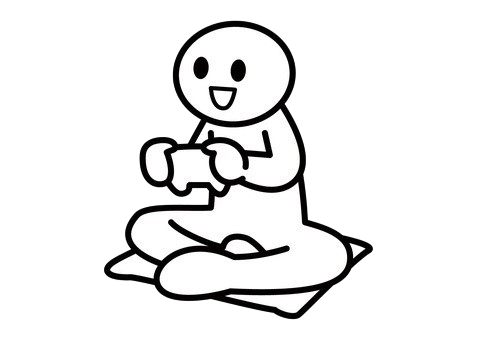

Primeiro post.
Feito Por: Matheus RibeiroOla, Esse blog vai ser usado para falar coisas sobre mim! sendo um hobby que eu faço, uma coisa interessante que aconteceu,etc.
Esse site vai ser usado para falar coisas sobre mim!

Ola, Esse blog vai ser usado para falar coisas sobre mim! sendo um hobby que eu faço, uma coisa interessante que aconteceu,etc.

Eu estou fazendo uma aula de eletiva de desenho e pintura em tela, eu acho bem legal! Eu acho que pintura é uma coisa bem calmo de fazer, eu até fiz artes como essa!


Eu jogo um monte de jogos, muitas vezes em console, mas algumas em um laptop também. Enquanto muitas das vezes eu jogo Roblox, eu já joguei outros tipos de jogos como Team Fortress 2, Geometry Dash,entre outros.
Enquanto tem muitos jogos que eu quero jogar quando eu ter meu dinheiro,um jogo que eu gosto, devido ser um jogo de ritmo que gosto, é BeatBlock!